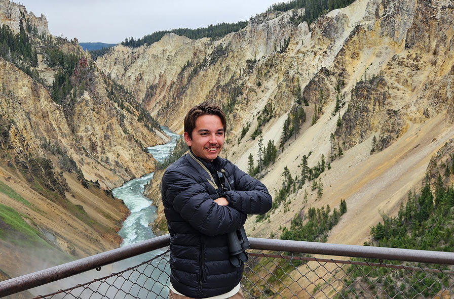

About Me

Hi, I'm Hunter Boyenga — a designer, photographer, and multimedia creator based in Northern California. I'm currently studying Design and History at UC Davis, where I focus on visual communication, storytelling, and how design shapes culture. I work with UC Davis Athletics and ESPN+ as a cross-trained broadcast crew member, operating cameras, running graphics and replay, directing, and supporting live production. I love the fast pace of sports media and the challenge of turning real-time action into engaging visual stories. On campus, I'm also the President of the Cross Country & Track & Field Club at UC Davis. I help, coordinate, design, and lead around 100 runners. We were ranked 5th in 2025 at the NIRCA National Championships. At the core, I'm driven by creativity, problem-solving, and continuous learning. Whether it's behind a camera, designing apparel, or producing a live broadcast, I'm always looking for the next opportunity to tell a compelling story.